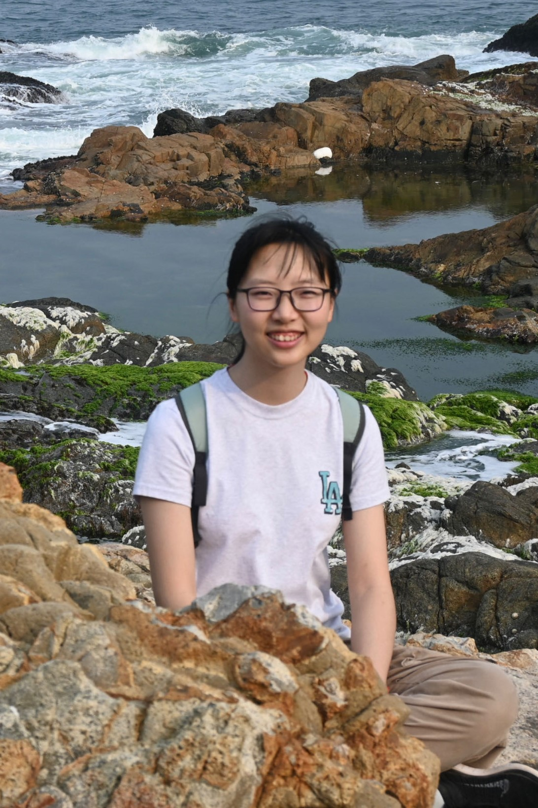
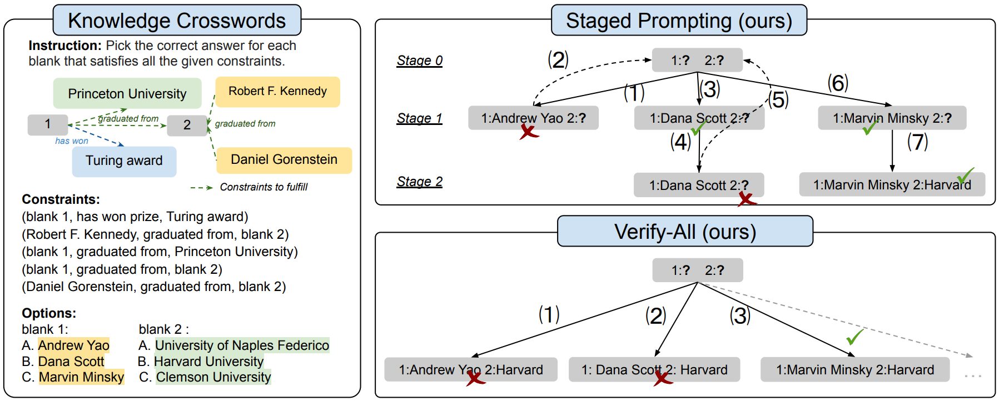
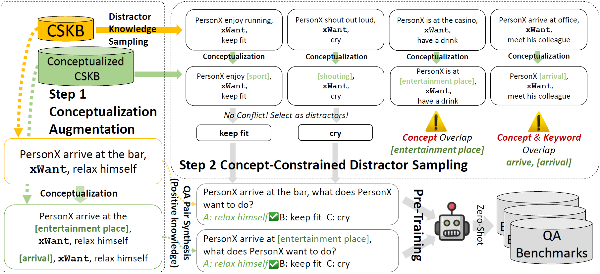

|
Wenxuan Ding I am a senior undergraduate student at The Hong Kong University of Science and Technology, with a major in Computer Science and a minor in Math.
At HKUST, I have been fortunate to be advised by Prof. Yangqiu Song at KnowComp Group. Additionally, I have had the invaluable opportunity to work with Prof. Yulia Tsvetkov at Tsvetshop@UW. ⭐I am actively looking for a PhD position starting in 2024 Fall! Feel free to check out my CV. Email / CV / Google Scholar / Twitter / Github |
 |
{kind=link}
ResearchI am generally interested in NLP, specifically in understanding and expanding knowledge abilities of LLMs, commonsense reasoning, theory of mind and NLP for social good. |
|  |
Wenxuan Ding*, Shangbin Feng*, Yuhan Liu, Zhaoxuan Tan, Vidhisha Balachandran, Tianxing He, Yulia Tsvetkov arXiv, 2023. code We propose KnowledgeCrosswords, a benchmark evaluating LLMs' abilities for geometric knowledge reasoning, posing new challenges involving reasoning with uncertainty, verification, backtracking, and more. |
|  |
Weiqi Wang*, Tianqing Fang*, Wenxuan Ding, Baixuan Xu, Xin Liu, Yangqiu Song, Antoine Bosselut Fingdings of EMNLP, 2023. code |

|
Haochen Shi*, Weiqi Wang*, Tianqing Fang, Baixuan Xu, Wenxuan Ding, Xin Liu, Yangqiu Song Fingdings of EMNLP, 2023. code |
Teaching
|
Miscellanea
|
|
Website template by Jon Barron. |